Management Interface Page: Data Storage
Description
This page allows to manage the data storage locations.
There are 2 tabs available on this page:
- Storage: these are the entities that provide simple fetch-store operations.
- Database: these are the entities that allow to perform complex queries without the need to manage connectivity.
The goal is to add more flexibility to the system by referencing a storage location instead of rather than embedding storage details directly in the code. This approach decouples the storage logic from the rest of the system, ensuring that storage-related operations are modular and interchangeable. By defining storage configurations separately, the system can seamlessly switch or update storage types (e.g., switching from a database to disk storage) without requiring modifications to other system components.
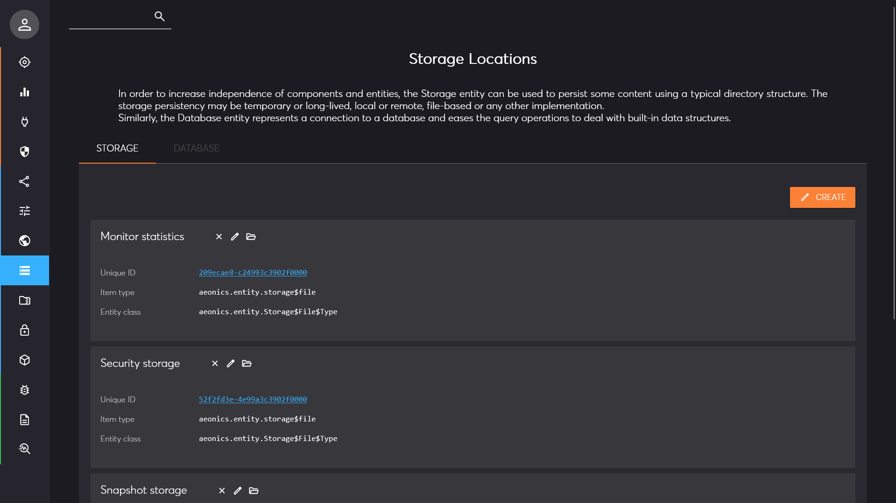
You can use the search bar on the top left corner of the page to filter the relevant elements as needed.
Storage
In the storage section, all sort of storage entities are listed and ordered by name. You have the possibility to inspect each entity by clicking on the unique ID in blue. The item type and entity class give you a hint about the type of storage that this item represents.
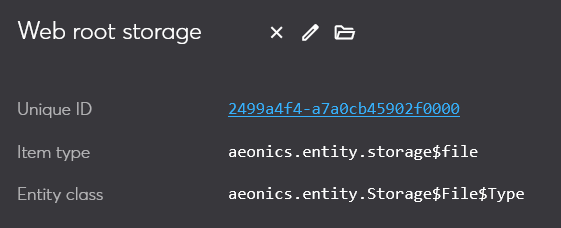
For each storage location, you can perform different actions by clicking on the icons.
Remove
You can click on the first icon (cross) to remove this storage location. You will be prompted for confirmation.
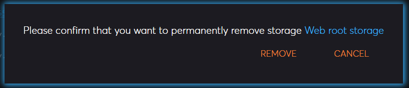
Edit
You can click on the second icon (pencil) to modify the configuration of the storage location. The parameters available depend on the type of storage.
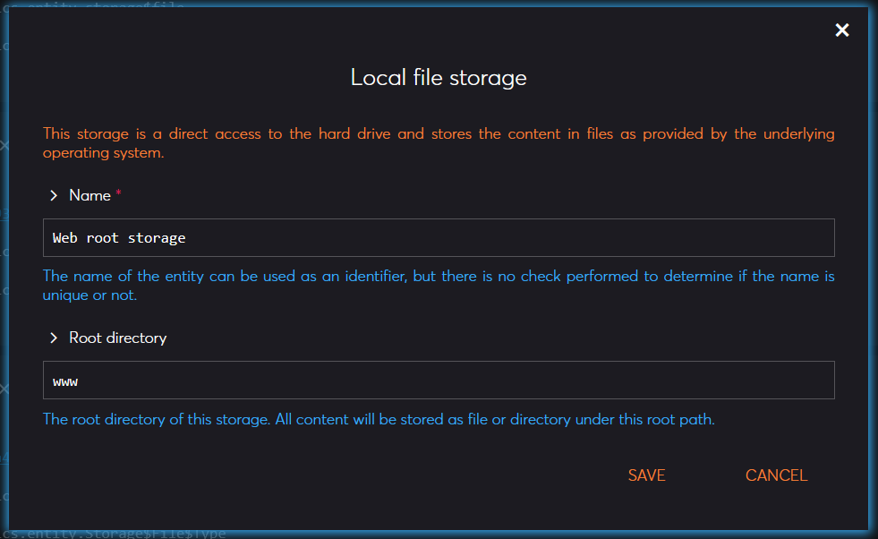
Browse
You can click on the last icon (folder) to browse the storage in a simplified file-explorer window.
If you double click on a directory (orange) you can list the contents.
If you double click on a file (white) it will download it.
If you drag & drop a file from your computer into the browsing area, it will upload it.
If you focus on a file and press the delete key, it will remove the file.
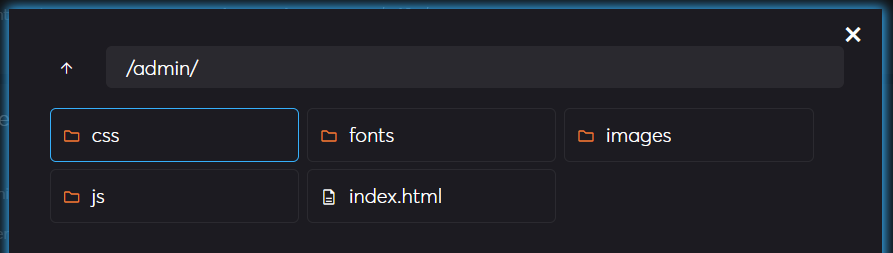
Create
You can create a new storage location by clicking the button on the top right border of the storage section.
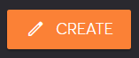
This will open the entity creation prompt with the different storage locations available in the system. Depending on the one you choose, the configuration parameters may differ.
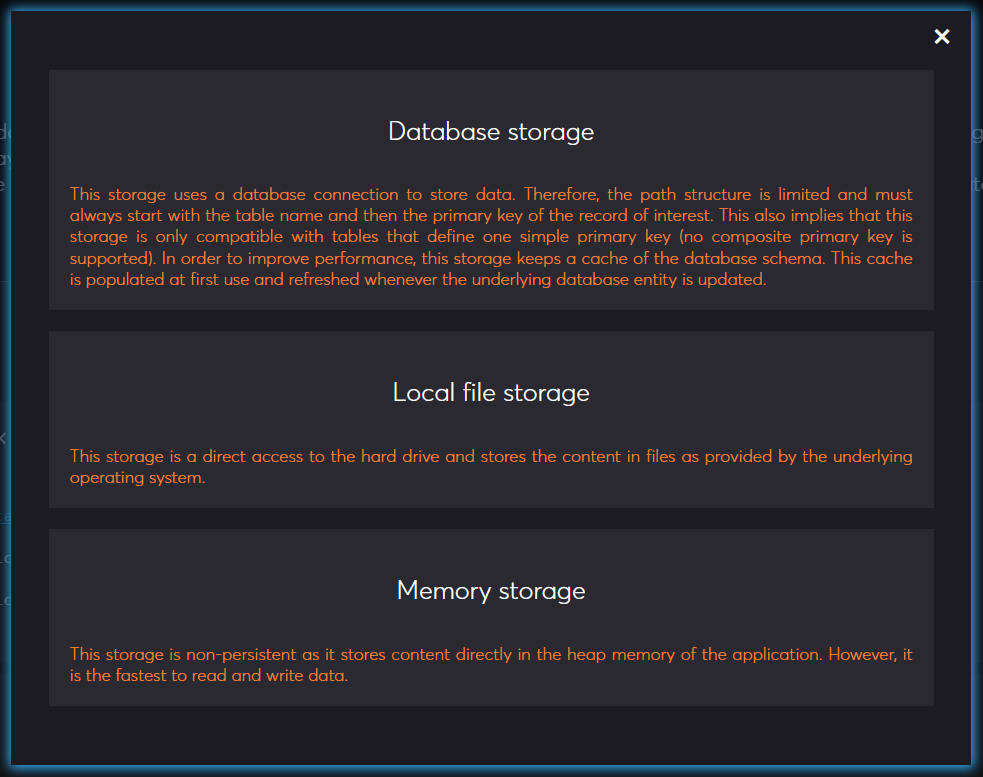
Database
In the database section, you can see all the database connections that are ready to be used. You have the possibility to inspect each entity by clicking on the unique ID in blue. The item type and entity class give you a hint about the type of storage that this item represents.
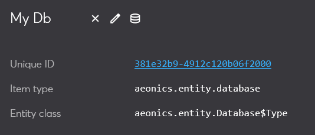
For each database connection, you can perform different actions by clicking on the icons.
Remove
You can click on the first icon (cross) to remove this database connection. You will be prompted for confirmation.
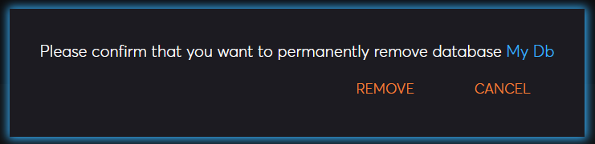
Edit
You can click on the second icon (pencil) to modify the configuration of the database connection. The parameters available depend on the type of storage but generally include common settings such as the driver and the jdbc connection string.
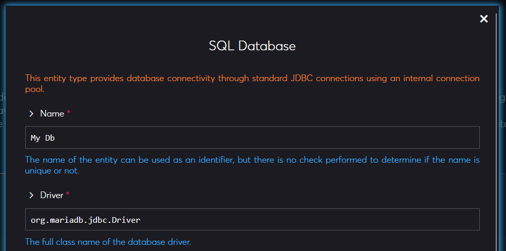
Query
You can click on the last icon (database) to test the connection and perform a direct query. Be careful because any query is passed directly unfiltered to the database.
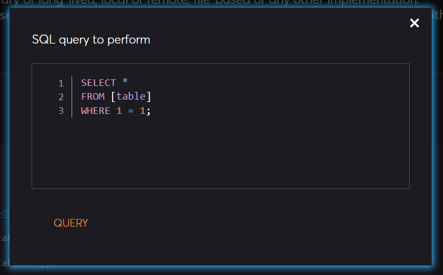
Create
You can create a new database connection by clicking the button on the top right border of the storage section.
This will open the entity creation prompt with the different parameters to setup the connection. Note that the connection is not validated at creation, but only when you perform the first query.
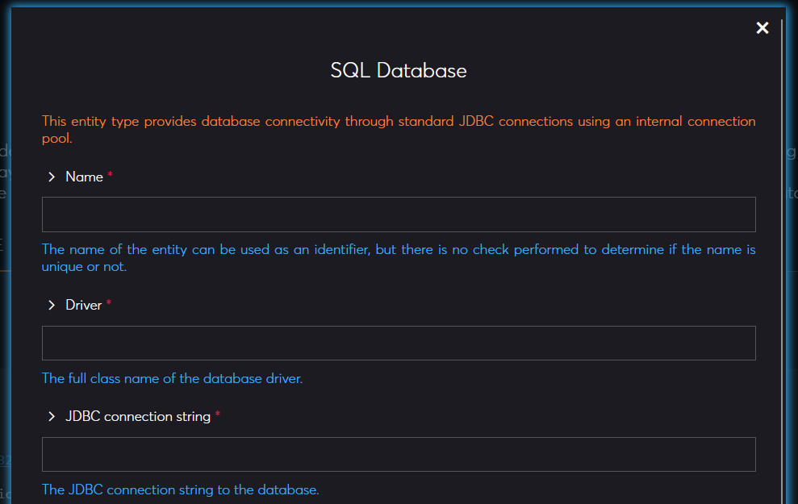